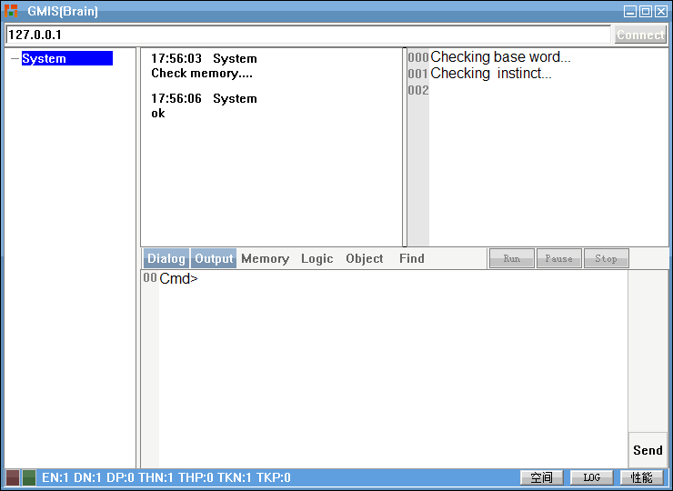
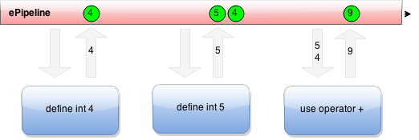
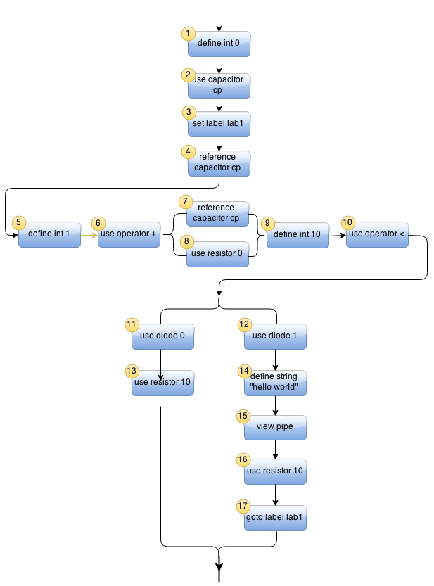
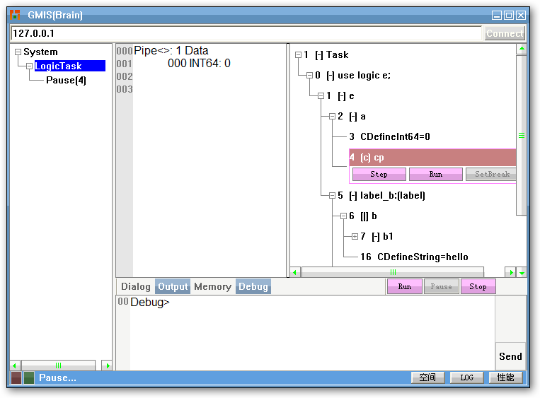

通过机器人自主编程实现强人工智能
1 老困境
自从1950年图灵提出"思维机器"这个概念以来，很多人在人工智能领域进行了各种努力。我们希望能造出这样的机器，但是目前从各方面来看，我们都失败了。
一些人可能注意到最近机器学习\深度学习等老的算法（当然有所改进）又重新流行起来，似乎给人一种印象，凭借硬件计算能力的快速增长，我们将可以实现人工智能的突破。
但明显，这类算法只能在一个很窄的特定应用领域模拟出人类想要的数据类结果，它既不通用，也不能让机器人产生任何逻辑行为。
唯一能让机器人产生行为的方法是:专业程序员的编程。程序员决定机器人的每一个动作，以至于有的人会这么评价现在的人工智能现状：“有多少人工就有多少智能”。
如果这个局面继续维持下去，很难想象机器人会有真正的智能，但这个困境也给我们带来一个新的思路，那就是假如我们能打破机器人对程序员的依赖，是否有可能产生真正的人工智能？
本文将探讨如何通过实现机器人自主编程，进而得到我们想要的强人工智能。
2 新思路
以现有的高级编程语言使用经验，我们知道要实现自主编程，有两个主要障碍：
1）假设我们让计算机随机组合函数和数据实现一个程序，那么它们一次性通过语法解析的可能性几乎为零，也就是说在形式上就无法编译通过，更别说执行了。
2）假设自动组合通过了编译（符合编程语法），那么还有一个程序是否符合逻辑的问题。
当一个机器人能实时组合出某个程序，并且这个程序所代表的行为逻辑确实就是它自身或我们当前所需要的时，那么我们完全就可以说这个机器人拥有了自主智能。
如何解决这两个障碍呢？
2.1 本能
把人想象成一台机器，他的智能就是一种实时编程表现，那么他是怎么做到的？人看似无所不能，但我们仔细分解他的所有行为，最终会得到一个本能的集合。这里的本能概念可能和生物上的本能并不完全相同，它更多的是逻辑意义上的。
或者，我们可以换个角度来理解，如果一个人的所有行为都可以用一门自然语言来完整表达，那么这门自然语言的所有动词集合就可以看作是他的本能集合。当然，这也是一个粗略的统计，因为同一个动词可能因为主语或宾语的不同而产生不同的意义。
但是，我们透过这些表面的复杂，可以得出一个结论：总有一个最小的，不可或者无需再分割的行为集合，它可以用来组合得到我们想要表达的任意逻辑。这个集合里的每一个行为，在本文里，我们称之为本能。
引入了本能概念，意味着，之后的编程将仅仅局限于这个有限集合的组合，而不再漫无边际。
那么，对于机器人，如何定义它的本能集合呢？从人类的进化历史来看，本能从来处于进化过程中，因此对它的定义其实并不需要一个标准的答案，我们可以任意尝试，直到在随后的实践中发现不足，再做调整，我想这也是一种进化。
对于任意一台硬件机器，我们可以根据它的应用范围，把它的所有功能分解为一个本能集合。这里的本能相当于是可以公开给他人使用的API，更准确一点，它是一种可以供外界（用户或其它机器人）理解、使用的功能函数。
本能和普通函数的区别主要在执行颗粒度上。比如，对于一个机械臂，它可以按自己的自由度实现移动，那么我们只需要把它归纳为一种移动到指定位置的本能，至于如何实现这个本能则是现有高级编程语言去做的事：它可能需要调用各种内部函数去处理舵机旋转角度，去处理自由度之间的协调和路径规划，但在智能表达这个层次，只看得见本能而不关心它内部的实现。
当我们按上述方式归纳出一个本能集合后，那么以后对机械臂的逻辑使用，就是对这个本能的组合，我们想实现自动编程就等同于自动实现这种本能的组合。
由于现在编程已经约束在了几种、几十种或几百种本能之间（取决与机器人的设计目的，它也决定了机器人的物种），相比于成千上万的低级函数，这已经显著减少了自动编程的复杂度，在一定程度上提高了效率（当然依然还不够，我们随后还会尝再谈到这个问题）。
2.2 逻辑树
现在，假设针对某个机器，我们已经有了一个本能集合，我们想通过这个本能组合实现自主编程，先不考虑逻辑的有效性，以最极端的组合方式：即随机组合，如何能让它们能通过合法编译，至少在形式上可以执行呢？
如果我们用传统高级编程语言随机组合这些本能（函数），那么我们还面临如何组合语法中固有的关键字问题，这些关键字通常每一门编程语言都有数十个，它们是否被正确使用决定了程序是否在形式上被正确编译，有此带来的天文数字般的组合，让这个世界最强大的计算机也变得无能为力。
可能有人会问，如果我不用这些关键字，我就只组合这些本能，是否可以实现自动编程？如果是这样，编译可能会通过，但这门语言将不再是图灵完备的，你将不能再表达任意逻辑。
如何解决这个问题？
如果你观察周围，你会发现自然界早就给了我们启示。无论你看到的任何物体，你总能找到其它物体，它们在逻辑关系上，要么是父子关系，要么就是兄弟关系。比如，银河系包含地球，地球包含国家，国家包含你做在的城市，城市包含你的大楼，大楼包含你的房间，房间里有很多并列存在的物体，而你只是其中一种，再深入到你的体内，你的血管成树状，你的神经成树状，甚至细微到原子组合，你都能在逻辑上找到一棵树。
换句话说，整个宇宙的逻辑都是通过树的形式来表达的。
这一切都是偶然吗？显然不是，树有一个特点，那就是你可以任意删减，插入，重组一颗逻辑树，形式上得到的依然是一个完全合法的逻辑树。
并且，我们相信，当用树这种形式来表达宇宙的逻辑时，并不需要也不存在另一个关键字体系。
如果我们把每一个本能都当作一棵树的树叶，然后以逻辑树的形式来编程重组本能，那么不管我们怎么做，理论上它是可以执行的，不会出现编译报警的问题。这样，我们将有可能解决上述两个障碍中的第一个。
当然，形式上可以执行，并不等于实际逻辑就可以执行，如果不能同时解决第二个难题，那么人工智能困境依然无法突破。
解决第二个难题的线索实际上来自于解决第一个难题的实践，当我们尝试用逻辑树的形式去编程后，你会发现它很好的实现了数据与行为的分离，所有本能所需的数据输入和输出都可以放在一个管道里来提供，这个管道就像一棵树的经脉，流经这棵树的同时，实现了这个任务逻辑的执行。
当数据管道流经一个本能节点时，此时管道里的数据可能不是这个本能所需要的，这样逻辑执行将中断。
但是管道流经每一个本能时，在执行之前，系统都会检查两者的数据是否匹配，所以系统会知道当前本能需要什么数据，这有什么意义呢？它可以让机器人驱动自己的信息器官去寻找所需要的数据，尝试让逻辑执行下去，而这可能就是我们梦寐以求的主动智能的源泉。
比如，如果当前要执行的本能需要一个文件名，那么它可以驱动机器人的视觉去找这个文件，或这直接向他人询问。这时会有两种可能，要么逻辑继续被合理执行，要么证明这个逻辑执行到这一步后是荒唐的，所需数据根本就没有或找不到，当前逻辑废止。
在这里，我们看到了一种靠内在需求驱动一个机器人去主动产生新行为的趋势，而不是某个算法。
通过逻辑树这种执行方式，可以很容易实现动态逻辑，这意味着机器人从一出生到死亡都可以像人类一样随时通过不断改变当前逻辑树来应对各种实时场景，而不是预先为一切可能编程。
逻辑树很容易被分割记忆，归纳和对比。当机器人的信息器官收到某个信息时，可以根据此信息在记忆中找到使用过它的本能，而通过此本能，又可以在记忆中找到常和它组合的下一个本能，而通过下一个本能所需的数据，则可能驱动机器人去尝试获得特定的信息，如此循环交互，大脑将避免随机组合本能，而是完全依据当前的场景来驱动产生行为逻辑。这样，我们将有可能解决第二个障碍。
实际上，除了逻辑树，你可以发现其它任何信息都可以按树的形式来记忆，这意味着整个大脑的结构将统一起来。
现在，对于实现一个主动智能体，无论从理论上还是工程实践上，我们都有了一个路线图，尽管它的细节可能还需要补充，但我们能感受到它的设计哲学是那么简单而优美，这给了我们很大信心。
3 验证
我们说了我们可以以逻辑树的形式在没有额外关键字参与的条件下表达任意逻辑，下面我们将给出实例去证明。
根据以上思路，我们以windows操作系统的PC为目标机器，然后归纳了一些我们认为目前必要的最小本能集合，这里的本能显然无法包括任何行走或感觉，但它能帮助我们验证仅以树的形式执行逻辑同样可以做到图灵完备。
3.1 Final C语言
为了实现这个目标，我们不得不先简单实现一个原型，命名为通用机器智能系统。它在这里充当PC机大脑的角色，只有一个类似IM的界面。

我们同时配套了一门类自然语言，称之为Final C。不用担心我们会强迫你学习另一门高级编程语言，在使用形式上，它已经和自然语言已经非常接近，所有输入都是一个由主谓宾短语组成的句子。
它没有独立的关键字体系需要你去学习，这对于机器人实现自主编程非常重要。
最初你要做的，仅仅是用一个谓宾短语教它每一个本能所对应的语言描述，这和教人类婴儿说话类似，可以避免你用难记的数字ID去引用指定的本能。
本能教完后，就可以用这些短语组成句子形成逻辑，输入后可以被立即执行，也可以被引用参与其它逻辑的组合，得到更复杂的行为，而这个更复杂的行为则可以再次像一个普通的本能一样用一个短语去描述，从而使得机器人的语言能力获得提升。
使用什么自然语言去教它完全取决于你自己的母语，作为缺省，我们让GMIS预先用英文和中文学习了它所有的本能，现在我们已经可以直接用英文命令或者中英文混合命令输入我们的任务逻辑。
让我们举例说明。
在GMIS的本能集合中，有一个是定义整数的能力，所以我们用一个短语“define int”去教它（用什么句子教它其实完全取决于你的意愿），然后我们输入： “define int 32."，即可以让GMIS执行这个本能。
GMIS还有一个执行算术的本能，我们用一个短语“use operator”来教它，这样如果要执行一个加法，可以输入：“define int 4, define int 5,use operator +.”
然后，你会在GMIS的输出窗口看到结果：9.
看上去，Final C似乎已经摆脱了传统高级编程语言那种公式语言带来的种种不便，其直接好处是，普通人可以更自然的与机器人交互。
但不幸的是，在用它来表达复杂逻辑时，仍然不得不掌握一些传统编程知识，这也是我们把它命名为Final C的原因：它是介于传统高级编程语言比如C语言和人类自然语言之间的中间过渡语言。
除非进一步提高GMIS的智能，让它完全和人类自然语言兼容，否则在目前阶段，理解和使用它必须掌握GMIS内部是如何执行逻辑的，这很重要。
让我们继续。
我们说过，逻辑树实现了数据与行为的分离，当它执行任何逻辑时，都会提供一个管道流进这个逻辑，负责提供输入和取回输出，就像下图：

一个管道就像一个保存有数据的队列，当它进入一个本能之前，必须拥有和这个本能要求一致的数据，每一个本能如果需要数据，就会假定管道里的前N个数据就是自己所需的参数，并取出来使用。系统会自动检查，如果不匹配会中断执行。
在机器人完全实现自主编程之前，这就要求用户在用本能组合复杂逻辑时，必须清楚的知道一个本能执行会后会如何改变管道里的数据，而下一个本能又需要什么样的数据，如果有必要，用户必须对管道里的数据进行适当调整以便让整个逻辑正常完成执行。
因此，如果现在用Final C给机器人下命令，虽然拥有了自然语言的形式，但背后依然必须满足传统编程语言的精确性，所以Fianl C还不是真正的自然语言，而是一门类自然语言，而要让Final C变成一门真正的自然语言，并不在于我们对Fianl C规定什么，只能让GMIS的大脑更成熟，可以在内部主动满足这种精确性，而这其实就是我们想要的自主智能。
3.2 图灵完备
现在让我们回到现实。就按现在的方式执行逻辑，那么Fianl C真的可以表达任意逻辑吗？
答案显然是：可以。为了证明这点，我们打算让GMIS执行一个较复杂的任务：循环输出10个"hello world"。
根据结构化编程理论，如果GMIS能够正确完成这个任务，就意味着它可以实现任何复杂逻辑，也就是我们想要的图灵完备。
在GMIS具体执行这个任务之前，让我们先回忆一下中学时学过的一些物理知识点：
串联和并联电路
串联就不用说了，对于并联，相同的电流会同时流过一个并联电路的各个分支。GMIS内部也会用到类似概念：逻辑行为之间要么是串联关系，要么就是并联关系。对于关联关系的逻辑分支，执行管道会复制自身，为每一个并联分支提供相同的数据。电容
当电容为空时，从电流里吸取能量，当电容有电时，又释放能量到电流中。GMIS用模拟了这个行为，以实现临时数据保存。电阻
电阻会消耗电流里的电子。对于GMIS来说，就是删除执行管道里指定数量的数据。二极管
它会让电流单向通过，GMIS稍微引申一点，它可以选择性的让电流通过。
有了以上知识点，让我们为这个任务画张电路图：

图中的每一个命令都是GMIS的本能之一，相信读者会很容易从字面意思上理解它的功能。
让我们简单跟踪一下它的执行流程：
- (1) 首先定义一个整数0，此时执行管道里含有数据：0；
- (2)接下来是名字为"cp"的电容，此时电容为空，这意味着管道里的所有数据都会保存在此电容里；
- (3) 设置逻辑断点lab1，它对管道没有任何影响；
- (4) 引用之前的电容cp，此时电容已经充电，所以现在会放电，把所有数据放回到管道里，也就是管道里含有数据：0，这是我们当前的循环计数；
- (5) 定义一个整数1，它是循环步长，执行这步后，管道里含有数据：0和1；
- (6) 执行一个加法，它会从管道里取出前两个数据，必须是数字，否则会报错，执行后会把结果放入管道中，此时管道里将只含有数据：1；
- (7) (8)现在准备进入一个并联体，管道会复制自身，以便进入每一个分支的管道数据都相同，在7）管道流进电容cp，由于此前cp已经放电为空，所以现在将保存管道里的数据，也就是1，在8）流进一个空电阻，也就是不消耗任何数据，当7）和8）分别执行完后，它们会按顺序合并每一个分支里的管道数据，最终效果是，循环计数被保存在电容cp里，同时管道里依然只含有此循环计数:1；
- (9) 现在定义循环终止数10，执行后管道里含有数据1和10；
- (10) 执行一个比较操作，这个操作会从管道里取出两个数字，比较的结果会放入到管道中，要么是0（false)，要么是1(true)；
- (11) (12) 现在遇到另一个并联体，此并联的两个分支都以一个二极管打头，二极管会从管道中取出一个数字，如果此数字与它本身拥有的相同则继续执行下一步，否则此分支就作废，不再执行。显然根据管道里含有的数据：1，这意味着12)所在分支将会继续执行，这个分支就是循环条件被满足后的工作分支，执行完12后，管道里暂时没有任何数据；
- (14) 定义一个字符串，执行后管道里含有一个字符串数据："Hello world"；
- (15) 这是一个打印管道里数据的操作，也就是我们想要的“输出”；
- (16) 我们定义了一个电阻10，也就是说会尝试删除管道里的前10个数据，显然管道里并没有这么多数据，这是一个预防性动作，实质就是清空管道；
- (17) 最后，我们执行一个跳转，回到3）设定的逻辑断点，重复执行以后的步骤，直到进入并联分支(11）后完成整个任务；
理解这张图的秘诀就是像观察电路图一样，在每一个节点上清楚知道电流里含有什么数据。
现在，让我们把这张图转换成Final C语言。就如同人的思考问题一样常把复杂任务分解为多个子逻辑来执行，我们现在也这么做。
让我们首先输入：
think logic circle;
这个命令会让大脑进入思考状态，下一步输入的命令将不会立即执行，而是构建一个名字为"circle"的临时逻辑。
接着输入：
use logic a, set label "lab1",use logic b, use logic c;
临时逻辑circle已经产生， 可以在logic view中看到此逻辑。它由三个子逻辑组成：子逻辑a负责定义一个循环起点，子逻辑b负责循环判断，子逻辑c则负责执行具体的工作。
下面，我们具体实现以上三个子逻辑：
think logic a;
define int32 0, use capacitor cp;
think logic b;
reference capacitor cp, define int32 1,use operator+, reference capacitor cp, and use resistor 0 ,define int32 10,use operator <;
以上句子可以一起输入。Final C对输入的格式没有更多要求。
注意：" reference capacitor cp, and use resistor 0"，这里两个命令之间多了一个and，它就意味着这两个命令是并联关系，两者在逻辑上将同时执行。
think logic c;
use logic c1, and use logic c2;
逻辑c也分为两个子逻辑，这两个子逻辑是并联关系，c1负责处理循环条件被满足的情况，c2负责处理循环终止的情况。
think logic c1;
use diode 1, view pipe, use resistor 1000,goto label "lab1" ;
think logic c2;
use diode 0, use resistor 1000;
最后，让我们输入以下命令执行整个任务
use logic circle;
OK, 假设一切都按预想的执行，现在你可能想知道，逻辑树在哪里？
让我们输入：debug;
然后再次输入：use logic circle.
你会在GMIS的Debug view发现这张图：

你输入的是线性表达的语言逻辑，但GMIS内部把它理解组装成一颗逻辑树来执行（或记忆），你可以按Step按钮一步步的执行我们上面提到的每一步。
3.3 等待进化
我们说过让机器人实现自主编程，存在两个难题，现在，我们已经有把握解决了第一个。
对于第二个，我们只做了一些理论上的探讨，要让机器人主动编程适应当前场景需要引入新的本能，而这些本能的背后则需要真实的硬件支持，比如比如各种信息器官和四肢的运动能力，否则你不可能让机器人去主动找到它想要的维持逻辑树正常生长的数据，而这不是一台普通PC可以提供的，但我认为机器人已经可以借此走上一条进化之路。我们不是上帝，对于机器人，我们是环境的一部分，我们有义务帮它们启动信息-行为之间的链式反应，就像曾经我们可能也曾受惠于此。
4 结论
最好的结论就是把我们想法变成可以验证的代码。GMIS已经开源，关于原型的使用可以参考其手册。如果你想加快它的进化，请联系我。
或许有人觉得本文的路径和目前的各种人工智能算法，比如神经算法，深度学习等等没有什么交集，它似乎在逼迫读者做二选一。
但事实上，它们并不是竞争者，而是互补关系。我把前者这类实现称为基于名词的人工智能，它们的目标实际上是输出迎合人类的信息表现，本身并不具备图灵完备性，而相应的，GMIS则是基于动词的人工智能实现，它的目标是直接操纵目标机器与客观世界交互，可以表达任意逻辑。这两者可以在某个阶段结合起来，比如，当机器人需要在当前场景中打开冰箱取出啤酒时，它可能需要深度学习来提取冰箱的特征，找到最佳的匹配，从而为打开行为提供操作对象。
最后，不是所有机器人都需要人类那样的智能，机器人也会形成具有不同智能程度物种，因此，在实现强人工智能之前，但目前的研究依然具有很多使用价值。GMIS已经足够有能力成为那些不需要太多智能的机器人的大脑，它可以让这些机器人实现相互协作，以人类分工的形式在同一个逻辑控制下完成工作。如果它的发展路径是正确的，那么它现在就有足够理由成为物联网的通用的标准。